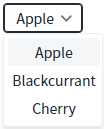
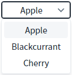
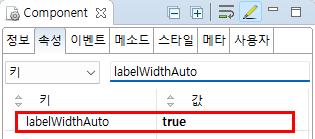

SelectBox의 'labelWidthAuto' 속성을 사용하여, 항목 중 가장 긴 문자열의 너비만큼 SelectBox의 너비가 자동으로 늘어나도록 설정한 예제입니다.
(기본 설정) 컴포넌트의 너비(width)를 사용자가 설정한 너비로 적용
컴포넌트의 너비(width)를 항목의 가장 긴 문자열을 기준으로 적용
예제 영역 '(기본 설정) 컴포넌트의 너비(width)를 사용자가 설정한 너비로 적용'에서 테스트합니다.컴포넌트의 너비와 목록 영역의 너비를 비교합니다.
1
SelectBox의 목록을 확장합니다.
목록 영역의 너비는 항목 중 가장 긴 문자열을 기준으로 적용되고, 컴포넌트의 너비는 사용자가 지정한 CSS 'width'로 적용됩니다.
컴포넌트의 너비는 소스에 설정된 '80px'로 표시되고, 목록의 너비는 항목 'Blackcurrant'의 문자열에 맞춰 표시됩니다.
Image 1.브라우저(Chrome) 실행 예시

예제 영역 '컴포넌트의 너비(width)를 항목의 가장 긴 문자열을 기준으로 적용'에서 테스트합니다.컴포넌트의 너비와 목록 영역의 너비를 비교합니다.
1
SelectBox의 목록을 확장합니다.
목록 영역의 너비와 컴포넌트의 너비가 항목 중 가장 긴 문자열을 기준으로 적용됩니다.
컴포넌트의 너비와 목록의 너비가 항목 'Blackcurrant'의 문자열에 맞춰 표시됩니다. (소스에 설정된 컴포넌트의 너비는 무시됩니다.)
Image 2.브라우저(Chrome) 실행 예시

1
속성을 설정합니다.
[필수] labelWidthAuto="true"
항목 중 가장 긴 문자열에 맞게 너비를 지정
Image 3.웹스퀘어 스튜디오의 Component View - 속성 설정 예시

Example 1.Source
<!-- selectbox의 소스 본문 예시 --> <xf:select1 labelWidthAuto="true" id="sbx_exam2"> <!-- 중략 --> </xf:select1>
labelWidthAuto